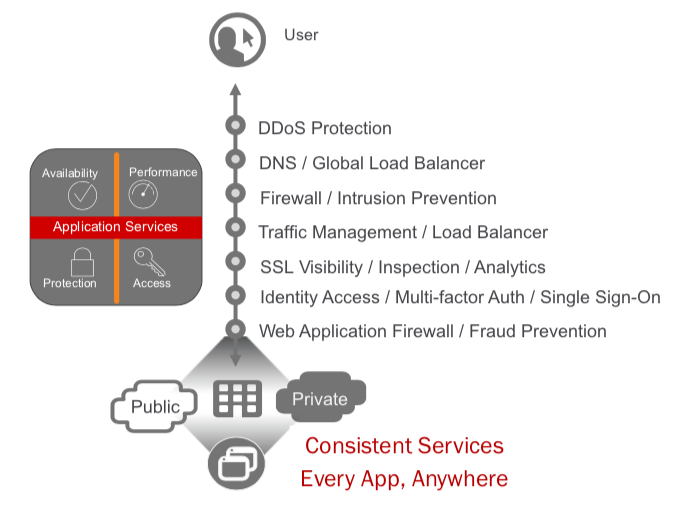
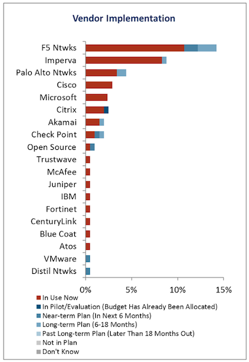

Unofficial - F5 Certification Exam Prep Material > F5 202 - Pre-Sales Fundamentals Study Guide 11/01/19 Source | Edit on
Section 3 - Proposal¶
Objective - 3.01 Given a scenario, recommend F5 solutions to meet technical requirements¶
3.01 - Determine which application services are needed
F5 provides many types of application services for our customer’s applications. These services provide increased availability, performance, access and protections regardless of where the customers applications are located. Each of these application services are made available through licensing on the platforms with Good, Better, Best (GBB) licensing model and add-on licenses, as well as F5 aaS offerings.
https://www.f5.com/solutions/application-security/ddos-protection
DDoS Protection
Distributed Denial of Service (DDoS) attacks threaten businesses with downtime that can damage their brand and even lead to financial losses. With the many IoT device-powered botnets and for-hire DDoS services, the threat of an attack is greater than ever. F5 provides DDoS protection across the range of attack vectors and at each level of the application.
Volumetric DoS attacks consume all available bandwidth across the network link that connects an application to the Internet or other networks. Computational DoS attacks attempt to exhaust infrastructure resources, such as firewall state tables, leading to crashing or degraded performance. Application DoS attacks mimic legitimate application requests but attempt to overload web server resources such as CPU or memory.
Applications can be attacked at many different levels. Below are just a sample of the types of application attacks at each level. Network Level DoS
SYN Flood
Every client-server conversation begins with a standard three-way handshake. The client sends a SYN packet, the server responds with a SYN-ACK, and the TCP connection is established with a final client ACK. In a SYN flood attack the client sends massive numbers of SYN requests, and never responds to the SYN-ACK messages from the server.
This leaves the server with open connections waiting for responses from the client. Each of these half-open connections is tracked in the TCP connection table, eventually filling the table and blocking additional connection attempts, legitimate or otherwise.
Memcached Amplification
An amplification attack is a type of reflection attack that takes advantage of the ability to send small spoofed packets to services that, as part of their normal operation, will reply back to the target with a much larger response.
Memcached is a database caching system for speeding up websites and networks. Attackers can spoof requests to a vulnerable internet-facing memcached server, which then floods a target with traffic, potentially overwhelming their resources. While the target’s infrastructure is overloaded, new requests can’t be processed and regular traffic can’t access the Internet resource, resulting in denial-of-service.
Other types of amplification attacks include NTP, SSDP, SNMPv2, CharGEN, QOTD, and more.
UDP Flood
UDP is a standard communication protocol across IP networks. Because UDP packets are stateless, they require less error checking and validation in contrast to TCP. A UDP flood attack attempts to overload a server with requests by saturating the connection tables on every accessible server port.
Filling the connection table with these requests prevents legitimate requests from being processed.
IP Fragmentation
IP fragmentation is a process established by design of the IP protocol that breaks packets or datagrams into smaller fragments, so they can pass through network links that have a smaller maximum transmission unit (MTU) limit. The host or stateful security devices receiving the fragments reassembles them into the original datagram. The packets’ or datagrams’ IP header tells the receiver how to reassemble the datagram.
These attacks come in various forms, but all variations attempt to use fragmentation to overwhelm the target server or network node.
DNS Level DoS
DNS Flood
DNS servers rely on the UDP protocol for name resolution, which (unlike TCP queries) is connectionless. Because confirmation that UDP packets have been received isn’t required, spoofing is easily accomplished.
This scripted botnet attack attempts to overwhelm server resources, ultimately affecting the DNS servers’ ability to direct legitimate requests. The attack can consist of valid UDP traffic from multiple sources or randomized packet data. This helps this attack type evade basic DDoS protection techniques like IP filtering.
NXDomain Flood
A variant of the DNS flood, an attacker floods the DNS server with requests for invalid or nonexistent records. Then, the DNS server spends its resources looking for something that doesn’t exist instead of serving legitimate requests. The result is that the cache on the DNS server gets filled with bad requests and clients can’t find the servers they’re looking for.
DNS Amplification
DNS amplification is a type of reflection attack that manipulates vulnerable internet facing DNS servers, causing them to flood an internet resource with an influx of large UDP packets.
An attacker-controlled botnet is scripted to send small, but specially formed, DNS queries to any publicly available DNS resolver. This elicits a disproportionate response from the DNS resolver. The packet headers also include a spoofed IP address, the IP address of the DDoS target. Upon receiving the query, the open DNS resolvers provide an extremely large response to the target of the attack, which eventually consumes the bandwidth of the internet resource.
TLS Level DoS
SSL Renegotiation
This attack takes advantage of an asymmetric workload by requesting a secure connection, and then continuously renegotiating it. This requires a lot of CPU power from the server and can slow current or new connections or even take down the server.
SSL Flood
Attackers send numerous TLS/SSL connection requests with the client never closing the connection. Once the concurrent connection limit is reached, the TLS termination point stops processing traffic, including legitimate requests.
SSL Squeeze
A variant of an SSL renegotiation attack, the squeeze attack continuously attempts to renegotiate the connection handshake, forcing the server to decrypt “junk” requests.
Typical renegotiation attacks multiplex SSL handshakes, which can be mitigated by disabling renegotiation on the server. However, SSL squeeze opens new TCP connections for each request, eventually consuming I/O.
Access Level DoS
Brute-Force Login Attack
An attacker tries multiple username and password combinations, often using a dictionary of words or commonly used passwords to gain unauthorized access to an application or website.
A common mitigation is to temporarily lock out user accounts with multiple failed login attempts. However, this can result in a denial of service for those affected accounts.
App Services Level DoS
HTTP Flood
In an HTTP flood, the attacker exploits seemingly legitimate HTTP GET or POST requests to attack a web server or application. These attacks typically consume less bandwidth than others but focus on triggering complex server-side processing to bring down the targeted site or app. HTTP floods can sometimes trigger responses from web servers that can turn it into a pipe-saturating volumetric attack.
Slowloris
Slowloris works by opening multiple connections to a web server and sending HTTP requests, none of which are ever completed. Periodically, the attacker sends subsequent HTTP headers for each request, but never actually completes the request. Ultimately, the target server’s maximum concurrent connection pool is filled and legitimate connections are denied.
Heavy URL
During the reconnaissance phase, an attacker will map out the most computationally expensive URLs on a site or application, also known as heavy URLs. Heavy URLs include any URL causing greater server load upon request. The initial HTTP request is relatively small but can take a long time to complete or yield large response sizes. These requests can require the server to load multiple large files or run resource-intensive database queries.
Slow Post
An attacker begins by sending a legitimate HTTP POST request to a web server, in which the header specifies the exact size of the message body that will follow. However, that message body is then sent at an extremely slow rate. Because the message is technically correct and complete, the targeted server attempts to follow all specified rules. If an attacker establishes enough of these POST attacks simultaneously, they consume server resources to the extent legitimate requests are denied.
F5 delivers complete DDoS coverage with our BIG-IP appliances in the datacenter and Silverline DDoS Protection managed services. Silverline DDoS Protection provides a flexible, hybrid, solution combining granular threat detection with always-on or on-demand high mitigation capacity in the cloud. Companies also benefit from 24x7x365 expert monitoring and support to augment resources when under a volumetric attack.
https://www.f5.com/products/big-ip-services/big-ip-dns
DNS / Global Load Balancer
Global load balancing is used to gain performance and availability of your global applications by sending users to the closest or best-performing physical, virtual, or cloud environment.
BIG-IP DNS provides speed and security and can hyperscale up to 100 million responses per second (RPS) to manage rapid increases in DNS queries. With a set of features that includes multicore scalability, DNS Express, and IP Anycast integration, BIG-IP DNS handles millions of DNS queries, protects your business from DDoS attacks, and ensures top application performance for users.
BIG-IP DNS routes distributed app traffic to keep pace with changing network and user volumes that can overwhelm data centers during peak traffic times. BIG-IP DNS can also be configured as a full proxy for global load balancing applications and DNS across architectures, as well as across the globe.
BIG-IP DNS services integrate with DNS zone management solutions, increase DNS performance at the network edge, and mask the DNS back-end infrastructure. That translates into higher productivity, server consolidation, faster responses, and protected DNS management
https://www.f5.com/pdf/products/big-ip-advanced-firewall-manager-datasheet.pdf
Firewall / Intrusion Prevention
Unlike traditional firewalls, BIG-IP AFM is built on the full-proxy architecture of the F5 TMOS operating system. Incoming client connections are fully terminated, inspected for possible security threats, and only then forwarded to the server—assuming no threats are present.
With the full-proxy capabilities of TMOS, BIG-IP AFM has in-depth understanding of the most commonly used inbound protocols such as HTTP/S, DNS, ICMP, and TCP, and supports a rich set of services that expand traditional stateful firewall capabilities. Additionally, this security enables deeper visibility into connections, allowing data to be manipulated and modified before it’s sent to servers or otherwise.
In the reverse direction, server-to-client communication is also proxied. BIG-IP AFM can scrub return data for sensitive information—for instance, protocol response codes that could divulge network information for reconnaissance attacks—and private data, such as credit card or Social Security numbers.
The full-proxy design enables termination of SSL, enforcement of security policies, east-west firewall capabilities, and other performance-related services—helping organizations address challenges in volatility inside and outside of the data center.
Gone are the days of mapping applications to zones, or scouring through spreadsheets of firewall policies to distinguish attacks on specific applications or to identify the IP address for a particular application server.
Unlike most network firewall solutions, BIG-IP AFM security policies are logically aligned with the applications in specific traffic flows—streamlining security operations and heightening security effectiveness. But similar to web application firewall solutions, BIG-AFM attaches network security policies to application objects. Details about the application parameters, including server addressing, SSL offload, and access policies, can be grouped together
with security parameters, including policies, SSL inspection, and logging. This includes information on which layer 7 protocols are permitted for specific application port access. F5’s app-centric approach provides increased efficiency in addressing app concerns and more accuracy in threat detection and policy effectiveness.
Further, since the configuration for an application is unified with an associated network security policy, deprovisioning of applications is also streamlined. When an application is deprovisioned, the obsolete security rules are simultaneously deprovisioned. BIG-IP AFM helps ensure the effectiveness of application deployment and simplifies policy assurance above rigid zone-based or segment-based constructs.
https://www.f5.com/pdf/products/big-ip-local-traffic-manager-ds.pdf
Traffic Management / Load Balancer
Applications drive innovation and profitability, allowing businesses to leverage trends such as cloud computing, mobility, and software‐defined networking (SDN).
Load balancing helps deliver applications to users in a reliable, secure, and optimized way. They provide the power to simplify, automate, and customize applications faster and more predictably.
Key benefits:
- Deliver applications rapidly and reliably
- Optimize for today’s web applications with HTTP/2 to ensure that customers and users have access to the applications they need—whenever they need them.
- Automate and customize with programmable infrastructure
- Control your applications—from connection and traffic to configuration and management—with F5 iRules LX, the next stage of evolution for network programmability that brings Node.js language support to the BIG‐IP platform.
- Transition to SDN and cloud networks
- Realize operational consistency and comply with business needs across physical, virtual, and cloud environments with deployment flexibility and scalability.
- Easily deploy and manage applications
- User‐defined F5 iApps Templates make it easy to deploy, manage, and get complete visibility into your applications.
- Secure your critical applications
- Protect the apps that run your business with industry‐leading SSL performance and visibility.
SSL Visibility / Inspection / Analytics
SSL/TLS enables businesses to securely communicate with customers and partners. Problem is, SSL/TLS can also function as a tunnel that attackers use to hide attacks and malware from security devices. Inspection devices like a next-gen firewall, an IDS/IPS, or a malware sandbox don’t see into encrypted SSL/TLS traffic or suffer degraded performance when decrypting. F5 SSL Orchestrator easily integrates into complex architectures and offers a centralized point for decryption and re-encryption while strategically directing traffic to all the appropriate inspection devices.
Managing the SSL/TLS connection between users and applications can be tedious and leave room for security risks. F5 offers a solution to centralize and simplify the management of keys, certificates, and ciphers used in end-to-end encryption, so you can cost-effectively protect data-in-transit by encrypting everything from the client to the server. It also adheres to the FIPS 140-2 standard and scales to absorb potentially crippling DDoS attacks. Use your solution to perform TLS termination, TLS cipher policy enforcement, or TLS offload.
Attackers and security researchers are constantly trying to find new ways to break today’s popular methods of encrypting data-in-transit. Often, a flaw in the protocol design, a cipher, or an underlying library is the culprit. Our solution provides for centralized management of your TLS configuration which enables better application performance and allows seamless flexibility in updating your TLS configurations as needed.
https://www.f5.com/pdf/products/big-ip-access-policy-manager-ds.pdf
Identity Access / Multi-factor Auth / Single Sign-On
BIG-IP APM simplifies and consolidates your infrastructure. The flexibility and scalability helps you to combine network access controls, identity federation, SSO, and adaptive authentication into a single application delivery solution.
Identity federation and single sign-on (SSO)
BIG-IP APM supports SSO and Kerberos ticketing across multiple domains,
enabling additional types of authentication, such as U.S. Federal Government Common Access Cards (CACs) and the use of Active Directory authentication for all applications.
Users are automatically signed on to back-end applications and services that are part
of a Kerberos realm. This provides a seamless authentication flow after a user has been authenticated through a supported user-authentication mechanism. BIG-IP APM also delivers smart card support with credential providers, so that users can connect their devices to the network before signing in.
BIG-IP APM simplifies mobile access to protected resources by enabling remote access (VPN) authentication and authorization from Microsoft Windows, Apple Mac OS, Apple iOS, and Google Android devices—as well as devices running Chrome OS via SAML (such
as Google Chromebooks). SAML-based authentication increases security, reduces user dependencies on passwords, and improves both the user experience and productivity.
SAML 2.0 further enhances BIG-IP APM identity federation and SSO options by supporting connections initiated by both SAML identity providers (IdPs) and service providers.
This functionality extends identity federation, as well as SSO capabilities to cloud-based applications and offers identity federation across an organization’s BIG-IP products. It also empowers administrators to centrally disable user access to all identity-enabled applications, regardless of where they reside, saving time and boosting administrative productivity.
BIG-IP APM can serve as a translator, enabling SSO via SAML to applications that support SAML, as well as to those that are not SAML-enabled. For applications that do not accept SAML, BIG-IP APM can convert the authentication access to the appropriate authentication for that application. This ensures users can utilize SSO to applications—regardless of whether these apps support SAML, are on-premises, or in the cloud.
BIG-IP APM secures the transport of SAML messages by supporting SAML artifact binding, reducing the flow of SAML messages through browsers, addressing certain browser restrictions, and extending identity federation and SSO support to automatically submitted forms that do not support JavaScript. BIG-IP APM also extends identity federation via SAML to client-based applications and other browserless environments—including desktop applications and server code in web apps—and streamlines user workflow by supporting SAML Enhanced Client or Proxy (ECP) profiles.
BIG-IP APM supports the OAuth 2.0 open-standard for authorization. It can serve as a client for social networking logins, as an authorization delegate for SaaS applications, and can enhance protection for and authorization of application programmable interfaces (APIs)
for web services.
By delivering seamless user access to web applications in a highly available and heterogeneous environment, BIG-IP APM improves business continuity and saves your organization from decreased user productivity. BIG-IP APM supports and integrates with AAA servers and user credential stores—including Active Directory, Lightweight Directory Access Protocols (LDAP), RADIUS, and Native RSA SecurID—and delivers high availability through the intelligent traffic management capabilities of BIG-IP LTM.
In addition, BIG-IP APM recognizes when an RSA SecurID software token is installed on a user’s Windows or Mac device, prompting the user for an RSA PIN and seamlessly authenticating that user. BIG-IP APM also supports Google reCAPTCHA V2 for authentication and contextual authentication.
https://en.wikipedia.org/wiki/Web_application_firewall
Web Application Firewall
A web application firewall (WAF) is a special type of application firewall that applies specifically to web applications. It is deployed in front of web applications and analyzes bi-directional web-based (HTTP) traffic - detecting and blocking anything malicious. The OWASP provides a broad technical definition for a WAF as “a security solution on the web application level which - from a technical point of view - does not depend on the application itself.” According to the PCI DSS Information Supplement for requirement 6.6, a WAF is defined as “a security policy enforcement point positioned between a web application and the client endpoint. This functionality can be implemented in software or hardware, running in an appliance device, or in a typical server running a common operating system. It may be a stand-alone device or integrated into other network components.” In other words, a WAF can be a virtual or physical appliance that prevents vulnerabilities in web applications from being exploited by outside threats. These vulnerabilities may be because the application itself is a legacy type or it was insufficiently coded by design. The WAF addresses these code shortcomings by special configurations of rule-sets, also known as policies.
3.01 - Determine which technical solutions are needed
https://partners.f5.com/solutions
This section is very similar with section 1.03 and 2.03 just from a different point of view. This section is focused on you understanding the technical solutions that should be proposed to allow you to start sizing and building the sales solution. Once again, you will need to know all of our products and the problems they can solve to prepare for this section of the exam.
3.01 - Determine licensing needs to meet customer requirements
https://www.f5.com/pdf/licensing/good-better-best-licensing-overview.pdf
https://www.f5.com/products/get-f5/perpetual-licensing-gbb
Licensing the F5 Features and Capabilities
No matter how a customer chooses to consume the F5 products in their environments (Perpetual, Utility, Subscription or ELA) they will need some or all of the features and capabilities of the TMOS operating system (load balancing, global load balancing, WAF, IP intelligence, web fraud protection, etc.). F5 came out with a simplified licensing model in 2013 called Good, Better, Best (GBB) to make it easy for you to bring advanced F5 capabilities to your customers’ environments at a pace and cost that match their budget and deployment requirements. Good licensing provides intelligent local traffic management for increased operational efficiency and peak network performance of applications. Better licensing provides all the benefits of “Good” plus advanced application delivery optimization. And Best licensing provides all the benefits of “Better” plus advanced access management and application security. Delivers optimal security, performance, and availability for your applications and network.
Good-Better-Best
Good Provides:
BIG-IP Local Traffic Manager
- Load balancing and monitoring
- Application visibility and monitoring
- L7 intelligent traffic management
- Core protocol optimization (HTTP, TCP, HTTP/2, SSL)
- SSL proxy and services
- IPv6 support
- Programmability (iRules, iCallTM, iControl, iApps)
- ScaleNTM (on-demand scaling of performance and capacity)
- BIG-IP APM Lite (user authentication, SSL VPN for 10 concurrent users) SYN flood DDoS protection
- Optional to Good, Included in Better: Advanced routing (BGP, RIP, OSPF, ISIS, BFD)
Better adds the following to Good:
BIG-IP DNS
- Global server load balancing
- DNS services
- Real-time DNSSEC solution Global application high availability Geolocation
- DNS DDoS attack prevention
BIG-IP Advanced Firewall Manager
- High-performance ICSA firewall
- Network DDoS protection
- Application-centric firewall policies
- Protocol anomaly detection
Best adds the following to Better:
BIG-IP Application Security Manager
- PCI-compliant web application firewall
- Web scraping prevention
- Integrated XML firewall
- Violation correlation and incident grouping
- Application DDoS protection
BIG-IP Access Policy Manager
- 500 concurrent user sessions; scalable up to 200,000
- BYOD enablement
- Full proxy for VDI (Citrix, VMware)
- Single sign-on enhancements (identity federation with SAML 2.0)
There are other add-on licensable features beyond GBB. Knowing all the products we offer beyond GBB will help you understand how to best solve customer issues. The list below is just a few.
https://f5.com/products/modules/ip-intelligence-services for information
IP Intelligence Services
IP Intelligence Services increases data center efficiency by blocking malicious activity at the earliest point.
https://www.f5.com/products/security/access-manager/secure-web-gateway
Secure Web Gateway
Paired with F5 Access Policy Manager, our Secure Web Gateway Services give you insight and tools to take action and ensure your network is safe from malicious threats.
https://www.f5.com/products/security/websafe-and-mobilesafe
Web Fraud Protection
WebSafe is a web fraud solution that provides clientless protection by leveraging advanced encryption capabilities, malware detection and session behavioral analysis.
https://www.f5.com/products/big-ip-services/carrier-grade-nat
CGNAT
CGNAT offers a broad set of tools that enables service providers to successfully migrate to iPv6 while continuing to support and interoperate with existing iPv4 devices and content.
There are also other stand-alone products that allow F5 to solve customer problems.
https://www.f5.com/products/security/ssl-orchestrator
SSL Orchestrator
Over 80% of page loads are encrypted with SSL/TLS. Attackers commonly use encryption to hide malicious payloads. If you’re not inspecting SSL/TLS traffic, you will miss attacks, and leave your organization vulnerable. SSL Orchestrator provides robust decryption/encryption of SSL/TLS traffic.
https://www.f5.com/products/security/ddos-hybrid-defender
DDoS Hybrid Defender
DDoS Hybrid Defender provides a greater depth of defense. It’s the only multi-layered defense that protects against blended network attacks and sophisticated application attacks, while enabling full SSL decryption, anti-bot capabilities, and advanced detection methods—all in one appliance. It also delivers the highest performance with line-rate capabilities and without impacting legitimate traffic.
https://www.f5.com/products/automation-and-orchestration/big-iq
BIG-IQ
Manage all your BIG-IP devices from one place. BIG-IQ Centralized Management provides a central point of control for F5 physical and virtual devices. It simplifies management, helps ensure compliance, and gives you the tools you need to deliver your applications securely and effectively.
Objective - 3.02 Given a scenario, recommend F5 solutions to meet business requirements¶
3.02 - Conclude how F5 solutions and technology meets the customer’s business needs
*https://www.f5.com/customer-stories*
Reviewing some of our customer success stories will help you understand the issues and challenges and restrictions our customers use F5 to solve.
*https://www.f5.com/services/resources/solution-profiles*
F5 solution profiles provide a high-level overview of how F5 products and features work together to deliver a complete solution for a particular technology or for a specific vertical market.
*https://partners.f5.com/solutions/f5-sales-plays*
F5 partner Sales Plays can provide background on how to position F5 products to solve customer issues.
3.02 - Determine ROI needs, depreciation needs, CapEx, OpEx, payment delivery timeframe
Understanding the following concepts will help the sales account team understand their customers restrictions and drivers for spending.
*https://www.idealware.org/measuring-return-investment-technology/*
Return on Investment (ROI)
As companies purchase infrastructure such as F5 BIG-IP platforms to handle all of their application services needs, they will weigh the costs of that infrastructure against the benefits that it provides. This measuring results in Return On Investment (ROI). Effective organizations have a positive Return on Investment, or ROI, for individual technology choices as well as their overall investment in technology.
*https://en.wikipedia.org/wiki/Depreciation*
Depreciation
Hardware assets like BIG-IP appliances can be depreciated over time. Depreciation is a method of reallocating the cost of a tangible asset over its useful life span of it being in motion. Businesses depreciate long-term assets for both accounting and tax purposes. The former affects the balance sheet of a business or entity, and the latter affects the net income that they report. Generally, the cost is allocated, as depreciation expense, among the periods in which the asset is expected to be used.
*https://en.wikipedia.org/wiki/Capital_expenditure*
CapEx (Capital Expenditure)
In short, it is the money a company spends to buy, maintain, or improve its fixed assets, such as buildings, vehicles, equipment, or land. For tax purposes, capex is a cost that cannot be deducted in the year in which it is paid or incurred and must be capitalized. This is the driver that motivates most companies to try to reduce CapEx and increase OpEx.
*https://en.wikipedia.org/wiki/Operating_expense*
OpEx (Operating Expense)
This is ongoing cost for running a product, business, or system. Its counterpart, a capital expenditure (capex), is the cost of developing or providing non-consumable parts for the product or system. In business, an operating expense is a day-to-day expense such as sales and administration, or research & development, as opposed to production, costs, and pricing. In short, this is the money the business spends in order to turn inventory into throughput.
If the company is sensitive to CapEx expenditures, then putting BIG-IPs into the operating budget may be preferable. BIG-IP VEs licensed under an Enterprise License Agreement (ELA) or Subscription licensing agreement.
*https://due.com/blog/10-invoicing-terms-need-know/*
Payment delivery timeframe
Businesses, regardless of the industry or size, require regular cash flow from their clients and the customer to pay their expenses, such as their employees’ salaries and the utilities. That’s why invoicing is a necessity. Without these bills, you won’t be compensated for the services rendered or products sold, which in turn means that you won’t be able to handle your expenses.
Objective - 3.03 Given a scenario, answer technical queries regarding a proposed F5 solution¶
3.03 - Justify F5 product choice as the correct solution
*https://partners.f5.com/solutions*
Product Justification
As you go through all of the available material on the F5 products and solutions that help your customers solve the problems they face in their application infrastructure, learning which products can work together to solve the problems the most cost-effective way is a very important part. Understanding that bundling products via licensing or even deploying a product as a stand-alone instance may be the best for the customer’s scenario.
3.03 - Justify product sizing
*K14810: Overview of BIG-IP VE license and throughput limits*
*K6475: Overview of SSL TPS licensing limits*
*K95135311: The BIG-IP APM platform session capacity for VIPRION, iSeries, and Virtual Edition*
*K14218: vCMP guest memory/CPU core allocation matrix*
Sizing BIG-IP
The platform and virtual editions datasheets will give you general performance numbers. You should refer to the datasheets as you make general sizing determinations. In most cases, these are the maximum capabilities at which either CPU or memory is completely consumed. This means determining CPU and memory requirements are extremely important in determining the appliance or virtual edition that is purchase for a solution. For, example, the amount of memory not only determines how many modules can run on a BIG-IP, but also how many concurrent connections can be maintained, as each current connection uses a finite amount of memory. CPU can be a limiting factor, HTTP compression consumers CPU, if not performed in hardware, SSL can consume CPU depending on the key size, cipher and whether the cipher is supported by hardware and for BIG-IP Virtual Editions this is always the case.
Often, CPU utilization and performance can be the key to determining whether appliances are needed as opposed to virtual editions. Offloading to hardware, functionality, as simple L4 operations to the ePVA, SSL key exchange to the Cavium/Intel SSL chip or compression chip will save both CPU and memory.
Some question you may want to ponder;
- Do I have enough CPUs and what kind of utilization should it expect?
- vCMP guest, multiple modules, complex or simple policies, iRules, analytics
- Am I leaving enough room for 3-5 years of growth?
- OpEx vs CapEx
- Memory requirements?
- vCMP guest, concurrent connections, HTTP caching is done strictly using memory
- What will SSL TPS look like?
- What ciphers will be used, what is the key size, how many SSL key exchanges will need to be built per second on both the client and server side.
- Concurrent connections?
- Connections/Sec?
- How many new connections per second need to be build.
- How much memory per connection is consumed (content spooling)
- Config size?
- What is the size on the overall configuration of the BIG-IP, do you need to allocate more memory to the control plane?
- Is the control plane overwhelmed?
- Are there multiple modules?
- Where can I accelerate/optimize?
Module Memory Requirements
Memory requirements in the release notes are solely for provisioning. They aren’t a substitute for sizing resources appropriately. When combining multiple software modules, you should typically size for the worst-case (heavy hitter) module and then adjust for running multiple modules. Each module will consume memory and CPU resources, so it’s better to oversize for multiple module use cases. BIG-IP ASM and BIG-IP APM are examples of resource-intensive modules.
How much memory does a connection take
It depends! Layer 4 state uses much less memory than layer 7. Basic rule of thumb is ~750k L4 connections per 1 GB of memory. Basic rule of thumb is 100-130k L7 connections per 1 GB of memory (~6X more memory than L4). Basic rule of thumb is 50-170k SSL connections per 1 GB of memory. These numbers are all for basic BIG-LTM functionality. Memory per connection may increase if other advanced services such as BIG-IP ASM, BIG-IP APM, and iRules are enabled.
CPU
CPU speed can be an important sizing metric when there are a lot of CPU-intensive tasks running. It can also be combatted by throwing more CPU cores at the problem, even if they are running at a slower speed. Think about what type of processing the sizing for (L7 processing, iRules, BIG-IP ASM, SSL ciphers that require software processing, Monitors, Control plane).
Web Application Firewall performance depends on a number of parameters, such as (Response size, Request size, Application/server response latency, Policys in use, Number of simultaneous connections, Logging profile, SSL key length in use). All of which are highly dependent on the applications and how it operates.
Sizing BIG-IP Summary
While throughput and connections per second are important metrics, they are not the only things that should be considered when sizing BIG-IP. Memory and CPU are just as important if not more important than some of the datasheet numbers. Plan for growth in any sizing exercise. You never know what resources you’ll need a couple of years down the road. Ensure you plan for the lifetime of the projected install.
3.03 - Distinguish F5 products from competition
Distinguishing F5 from Competition
Most of the time it is best as a customer’s trusted advisor to not attack F5’s competition and try to make claims on what they can’t do. It is always a better approach to explain how we can effectively solve the problems or issues they are facing. F5 has a large repository of documentation on our product capabilities. But there are a few generalized documents that will help you with competitive differentiation and customer objection handling. If you must have specific documentation that relates to F5’s capabilities as opposed to one of our competitor’s, you should work with the F5 sales team on the account and let them find the necessary information.
#1 most deployed WAF worldwide!!
